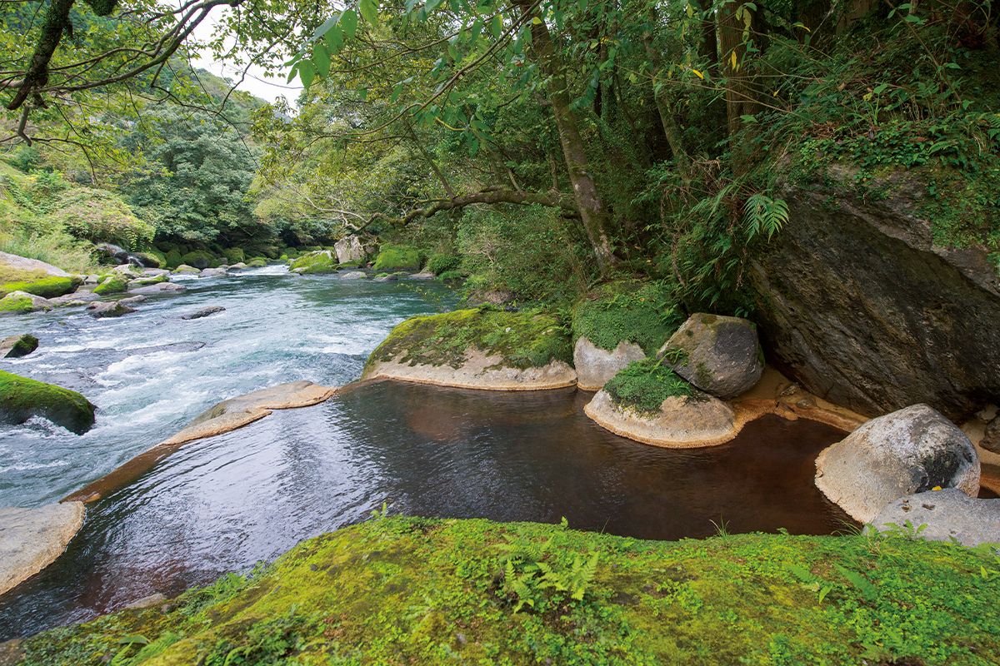
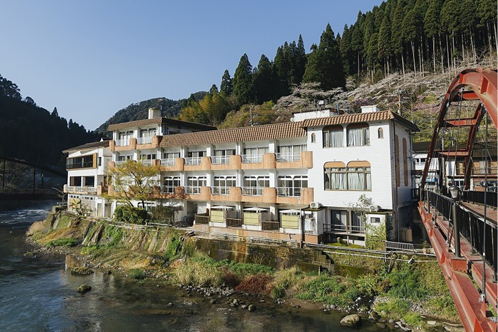
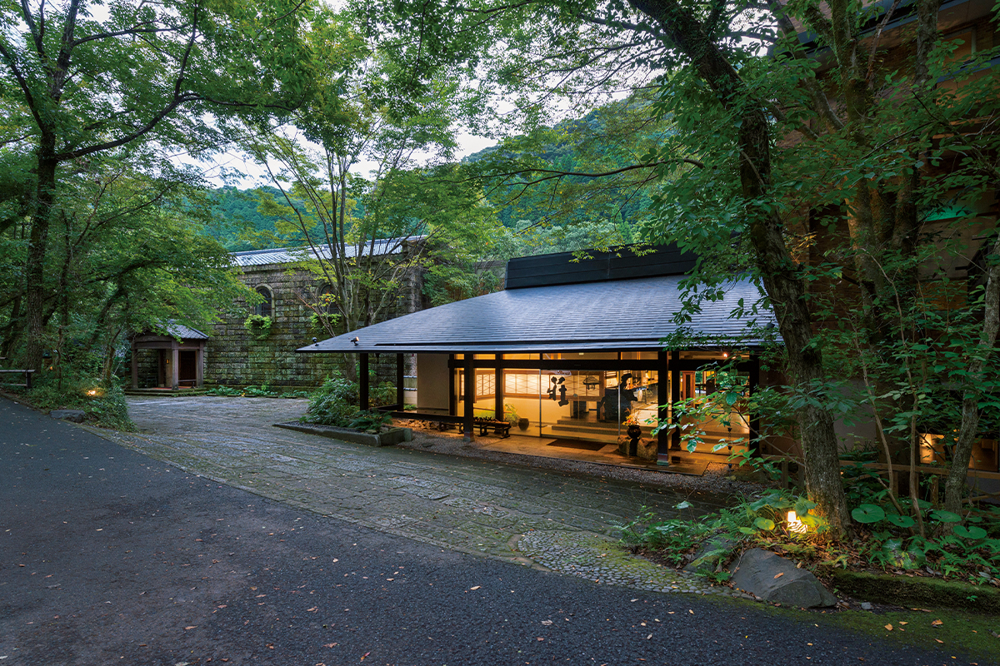
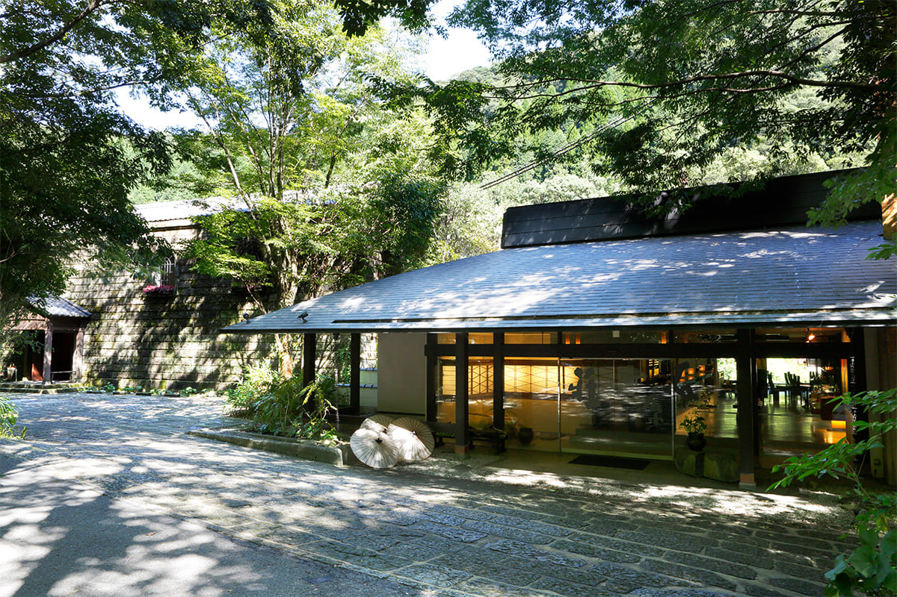
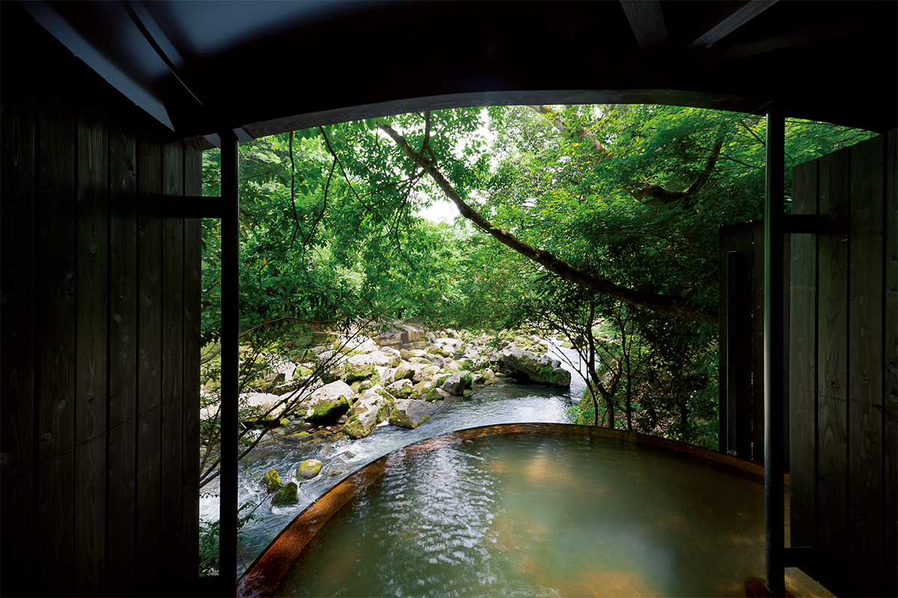
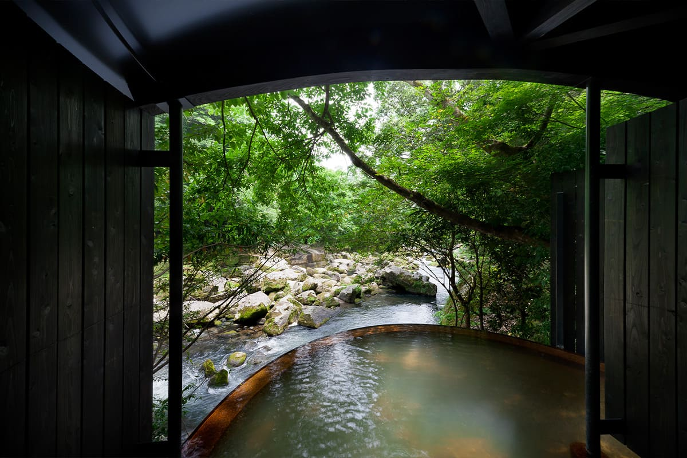
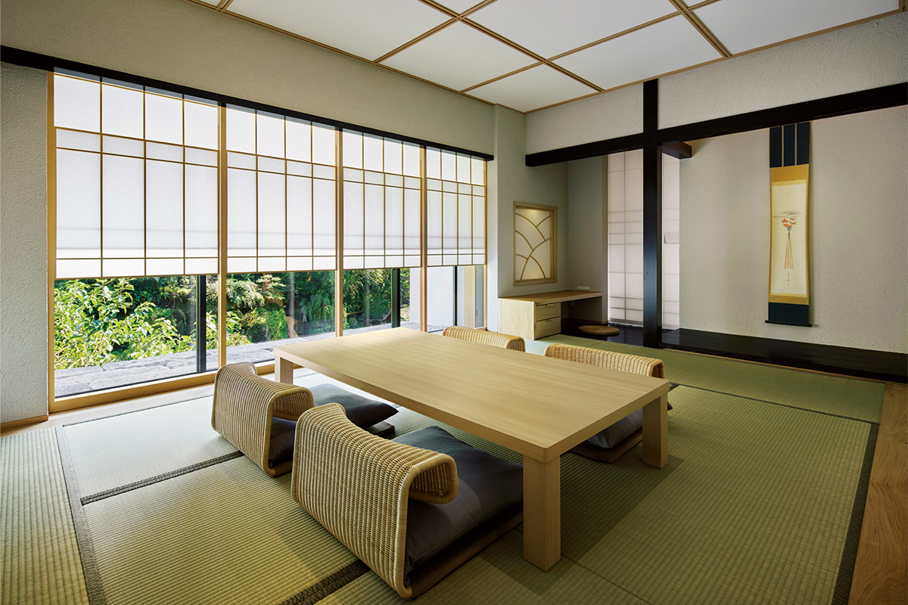
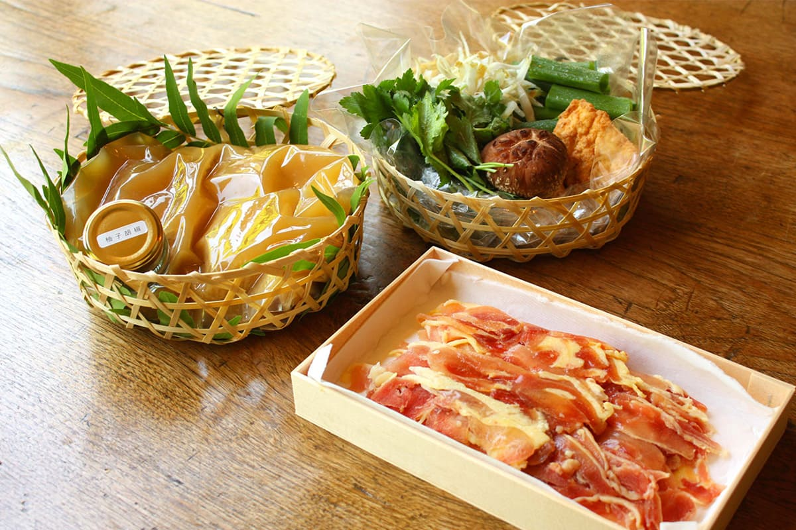
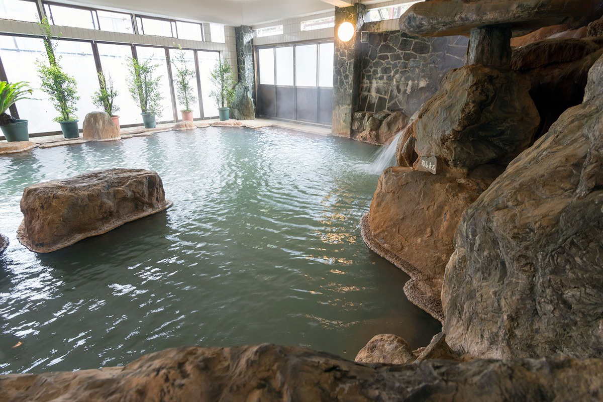

Префектура Кагосима · Кирисима · онсэн
Онсэн Мёкэн: пузырьки углекислоты в ущелье реки Амори

В горах Кирисимы, в ущелье быстрой реки Амори, поодиночке стоят около десятка гостиниц. Вместе они и есть онсэн Мёкэн, один из самых сильных источников Кюсю, где вода шипит пузырьками и бережёт кожу.
Долина
Онсэн, у которого нет улицы
Вода с гор Кирисимы собирается в реку Амори. Она торопливо бежит вниз и прорезает ущелье Синкава, знаменитое осенними клёнами. Вдоль реки один за другим поднимаются пары разных источников, и главный среди них онсэн Мёкэн.
В Мёкэне около десяти гостиниц, от дорогих рёканов вроде «Мёкэн Исихара-со» до скромных домов для долгого лечения на водах, где гости сами готовят себе еду. Привычной курортной улицы здесь нет. Каждая гостиница стоит сама по себе, между рекой и склоном горы, и кажется единственной в округе. Профессор, который изучает онсэны больше сорока лет, признаётся, что любит это место именно за такой характер.

Источник
«Мёкэн Исихара-со»: вода, которая не встречается с воздухом
Самая известная гостиница Мёкэна стоит на берегу реки Амори. Здесь считают, что онсэн это живое существо, и вся гостиница устроена так, чтобы вода доходила до гостя свежей. На территории семь источников, и у каждого построена своя купальня. Горячая вода сама поднимается из-под земли, остывает до нужной температуры в теплообменнике, не соприкасаясь с воздухом, и сохраняет весь свой состав. Холодной водой её не разбавляют и в баках не держат. Размер каждой ванны рассчитан по дебиту источника, так что за час вода в ней полностью сменяется.


Исследовательница, которая изучает влияние онсэнов на красоту, советует посмотреть на воду низко, почти с её поверхности. Видно, как на ней лопаются крошечные пузырьки: это углекислый газ. В первый миг вода бодрит прохладным покалыванием, потом кожа розовеет и по телу разливается тепло. После купания чувствуешь лёгкость и свежесть.
Вода гидрокарбонатная, с натрием, кальцием и магнием, и содержит примерно 500–700 мг углекислого газа. Такая вода разгоняет кровь и помогает обмену веществ. Из источников она выходит при 55–56 °C, немного мутная, с желтоватым оттенком. Её не подогревают и не разбавляют, и она постоянно течёт через ванны.
Купальни разбросаны по территории, и у каждой своё место и свой облик, поэтому их обходят пешком, одну за другой. По пути есть источник для питья, где можно попробовать шипучую воду прямо из земли.

Частную купальню «Муцуми-но ю» архитектор задумывал так, чтобы вместе с качеством воды гость чувствовал и удобство пространства. Из неё видно поток и камни ущелья.

В гостинице есть и номера с собственным онсэном. В особом номере «Рури-мурасаки» полуоткрытая купальня размером почти с саму комнату, так что онсэн можно держать при себе весь день.

Кухня
Сезон Кагосимы на тарелке
Второе, ради чего едут в «Мёкэн Исихара-со», это еда. Ужин здесь подают в стиле кайсэки, из сезонных продуктов Кагосимы. Вкус каждого продукта чувствуется ясно, и к таким блюдам лучше всего подходит местный сётю. Блюда выкладывают так, чтобы чувствовалась культура Кирисимы, на посуду мастеров со всей Японии, которую подбирали под каждое блюдо.
Самое популярное блюдо гостиницы это сябу-сябу из бедра курицы «куро-сацума-дори», местной породы, с фрикадельками цукунэ. Бульон варят с кунжутом и тремя видами мисо: ячменным, рисовым и красным. Фрикадельки делают его ещё насыщеннее, а к мясу по вкусу подают пасту из юдзу и перца.

Другое блюдо Мёкэна, «коикоку», это карп в густом бульоне из рисового мисо. В Японии говорят, что карп, поднявшийся по водопаду, становится драконом, и в Мёкэне такое блюдо до сих пор считают едой для сил и для тех, кому предстоит трудное испытание. Карпа тщательно чистят, чтобы у него не было запаха тины.
Флигель
«Нэму»: «вода красавиц» в 15 минутах от аэропорта
У «Мёкэн Исихара-со» есть флигель, гостиница «Нэму», и именно её советует профессор онсэнов. Вода здесь того же типа, гидрокарбонатная с натрием, кальцием и магнием, из источника выходит при 53 °C. В ней много метакремниевой кислоты, природного увлажняющего вещества, поэтому её называют «водой красавиц».
Несколько лет назад профессор с коллегами проверил это опытом. За четыре ночи короткого лечения на водах у участников выросла влажность кожи на щеках, а её способность сопротивляться окислению, от которой зависят упругость и молодость, резко повысилась. Кроме того, заметно снизилось давление и уменьшились продукты обмена активного кислорода, который называют «корнем всех болезней». Общие показатели здоровья тоже улучшились, и Мёкэн оказался одним из самых действенных онсэнов Кюсю.

Главная ванна «Нэму» это большая купальня среди камней, но профессор особенно рекомендует среднюю купальню «Огон-ю». Вода в ней с трудом окисляется, и по качеству это лучшая вода гостиницы. Хороша и тёплая ванна с температурой 38 °C, в которой можно лежать долго.
От аэропорта Кагосимы до «Нэму» всего 15 минут на машине. В такой укромной гостинице можно спрятаться от города на выходные, и даже одна ночь, по словам профессора, восстанавливает и тело, и голову. Ночь с ужином и завтраком стоила от 19 800 иен с налогом и сервисным сбором в 2024 году, в «Мёкэн Исихара-со» от 25 000 иен с налогом и сервисным сбором в 2022 году.
«Мёкэн Исихара-со»
- Адрес
- префектура Кагосима, Кирисима, Хаято-тё, Карэйгава, 4376
- Телефон
- +81 995-77-2111
- Цены / Вход
- ночь с ужином и завтраком от 25 000 иен (с налогом и сервисным сбором); дневное купание 11:00–15:00 (вход до 14:00)
- Заезд / выезд
- 15:00 (некоторые номера с 14:00) / 11:00
- Выходные
- без выходных
- Как добраться
- на машине около 15 минут от съезда Мидзобэ-Кагосима-Куко скоростной дороги Кюсю; от станции JR Хаято на автобусе около 20 минут до остановки «Исихара-со-маэ»
«Нэму»
- Адрес
- префектура Кагосима, Кирисима, Хаято-тё, Карэйгава, 4386
- Телефон
- +81 995-77-2201
- Цены / Вход
- ночь с ужином и завтраком от 19 800 иен (с налогом и сервисным сбором)
- Заезд / выезд
- 15:00 / 10:00